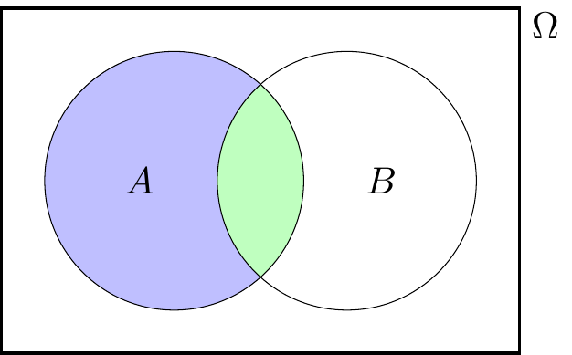

Tips on writing mathematics
In the mid-semester survey, a few people suggested I could offer some clearer advice on writing mathematics well. This is a brief attempt at doing that. I may try to expand this a bit later.
Advice
If a maths question asks you to “State”, “Write down” or “Calculate” something, you don’t need to do any more than give the answer. But if a question asks you to “Prove”, “Show that” or “Explain”, then the marker is looking for a clearly explained answer, and will base your mark on how well you explain your solution, not just on it’s mathematical accuracy.
Some things a marker might look for include:
- If you had to make your own notation, have you explained clearly what it means?
- If it’s a “words question”, have you clearly translated the information into mathematical notation?
- In your solution, do you clearly state how you know certain statements are true? (“From the question, we know that…” “From the definition of …” “Using the law of total probability…” “From Axiom 2, we see that…”)
- When making non-obvious algebraic manipulations, do you explain what you’re doing? (There’s usually no need – but no harm either! – in stating obvious things like “Dividing both sides by 2…”, but for less obvious things like “Recognising this as difference of two squares…” or “By the linearity of expectation…”, you should say so.)
- Does your solution show clearly the “direction” of the proof. (“We start with the definition of…” “We need to show that…” “Assume, seeking a contradiction, that…” “If we could show that … then this would be sufficient to give the result.” “We will bound each term in this expression separately.”)
- Do you write in full sentences? Even equations should (usually) include punctuation, such as ending with a full-stop if they end a sentence.
- An extremely rough rule of thumb – which is often, but not always, applicable – is that a good solution should be at least 50% writing and at most 50% equations.
- It’s usually best to avoid abbreviations and shorthand, like “LHS” (“left-hand side”), “WLOG” (“without loss of generality”), “iff” (“if and only if”), etc, although specific technical abbreviations from the course, like “PMF” (“probability mass function”) are OK. Mathematical shorthand like \(\therefore\) or \(\Rightarrow\) should be avoided as “word alternatives” (“So”, “Thus”, “Therefore”, “Hence”, etc, are better), but are OK in certain circumstances where they have specific technical meanings.
- It’s fine – and often good! – to use diagrams to aid your explanation. But a diagram is rarely sufficient by itself without some writing to explain what it shows.
Examples
Here are two solutions for Problem Sheet 3 Question B1. This first solution is a typical sort of solution I might see from a student. The second solution has exactly the same mathematical content, but is more clearly explained. Which do you think is better?
Problem Sheet 3, Question B1. Suppose \(A\) and \(B\) are independent events. Show that \(A\) and \(B^\comp\) are also independent events.
Solution 1.
[ P(A) = P(A B) + P(A B^) ]
\[\begin{align*} \Rightarrow \qquad \mathbb P(A \cap B^\comp) &= \mathbb P(A) - \mathbb P(A \cap B) \\ &= \mathbb P(A) - \mathbb P(A)\,\mathbb P(B) \\ &= \mathbb P(A) \big(1 - \mathbb P(B)\big) \\ &= \mathbb P(A) \, \mathbb P(B^\comp) \end{align*}\]
Solution 2. We need to show that \(A\) and \(B^\comp\) are independent, which means showing that [ P(A B^) = P(A) , P(B^) . ]
By splitting the event \(A\) up into “the bit in \(B\)” and the “the bit not in \(B\)”, as shown in the Venn diagram below, we have a disjoint union [ A = (A B) (A B^) . ]

Applying Axiom 3 to this disjoint union, we have [ P(A) = P(A B) + P(A B^) . ]
Hence, the left-hand side of \((*)\) is \[\begin{align*} \mathbb P(A \cap B^\comp) &= \mathbb P(A) - \mathbb P(A \cap B) \\ &= \mathbb P(A) - \mathbb P(A)\,\mathbb P(B) \\ &= \mathbb P(A) \big(1 - \mathbb P(B)\big) \\ &= \mathbb P(A) \, \mathbb P(B^\comp) . \end{align*}\] In the second line, we used the fact that \(A\) and \(B\) are independent, as given in the question, to replace \(\mathbb P(A \cap B)\) by \(\mathbb P(A)\,\mathbb P(B)\). In the final line, we used the complement rule \(\mathbb P(B^\comp) = 1 - \mathbb P(B)\). But this is exactly the right-hand side of \((*)\). Hence, we’ve shown the left- and right-hand sides of \((*)\) are equal, and we are done.
Here’s another example – Problem Sheet 3, Question B3(b):
Problem Sheet 3, Question B3(b). Soldiers are asked about their use of illegal drugs, using a so-called “randomised survey”. Each soldier is handed a deck of three cards, picks one of the three cards at random, and responds according to what the card says. The three cards say:
- “Say ‘Yes.’”
- “Say ‘No.’”
- “Truthfully answer the question ‘Have you taken any illegal drugs in the past 12 months?’”
Suppose that 40% of soldiers respond “Yes”. What is the likely proportion of soldiers who have taken illegal drugs in the past 12 months?
Solution 1.
\[\begin{align*} \mathbb P(\text{Yes}) &= \mathbb P(C_1)\,\mathbb P(\text{Yes} \mid C_1) + \mathbb P(C_2)\,\mathbb P(\text{Yes} \mid C_2) + \mathbb P(C_3)\,\mathbb P(\text{Yes} \mid C_3) \\ \Rightarrow \qquad\qquad\ \ 0.4 &= \tfrac13 \times 1 + \tfrac13 \times 0 + \tfrac13 \, \mathbb P(\text{Drugs}) \\ &=\tfrac13 + \tfrac13 \,\mathbb P(\text{Drugs}) \\ \Rightarrow \qquad \mathbb P(\text{Drugs}) &= \frac{0.4 - \frac13}{\frac13} = 20\% \end{align*}\]
Solution 2. Let \(C_1, C_2, C_3\) be the events that a soldier picks cards 1, 2, or 3 respectively. These have each probability \(\mathbb P(C_1) = \mathbb P(C_2) = \mathbb P(C_3) = \frac13\), because the three cards are equally likely.
Let \(Y\) be the event that the soldier answers “Yes”. We are told that \(\mathbb P(Y) = 0.4\).
We know that \(\mathbb P(Y \mid C_1) = 1\), because a soldier must answer “Yes” to Card 1, and \(\mathbb P(Y \mid C_2) = 0\), because a soldier must answer “No” to Card 2. For Card 3, a soldier answers “Yes” if they have taken drugs and “No” if they have not, so \(\mathbb P(Y \mid C_3) = \mathbb P(D)\), where \(\mathbb P(D)\), which we want to find, is the proportion of soldiers who have taken illegal drugs in the past 12 months.
Since \(C_1, C_2, C_3\) make up a partition – a soldier must pick exactly one card – the law of total probability tells us that [ P(Y) = P(C_1),P(Y C_1) + P(C_2),P(Y C_2) + P(C_3),P(Y C_3) .] With the information we have gathered above, we have [ 0.4 = + + , P(D) = + ,P(D) . ] Solving this gives [ P(D) = = = 20% . ]